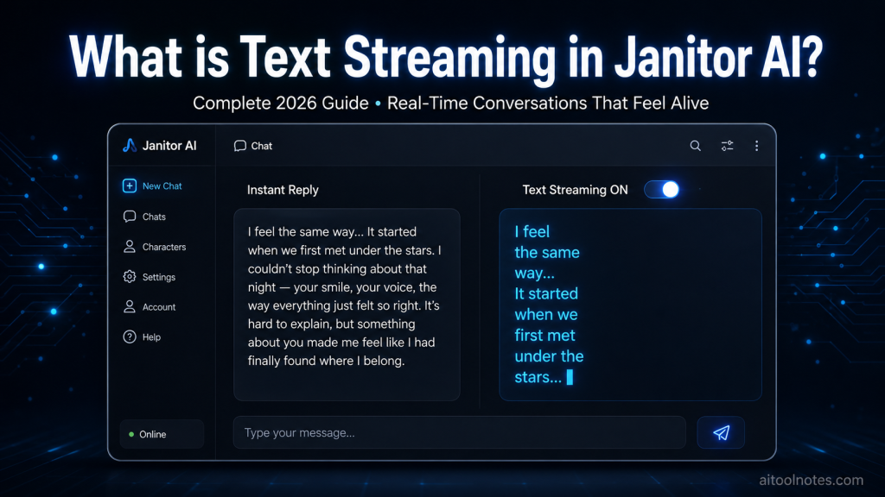

Janitor AI has become one of the most popular platforms for immersive character roleplay, interactive storytelling, and deep conversational experiences. Unlike generic chatbots, it lets users engage with highly customized characters through rich, ongoing narratives. One feature that dramatically improves this experience is text streaming.
If you’ve ever waited for a full reply to suddenly appear after seeing only “replying…”, you’ve encountered the difference text streaming makes. This guide explains exactly what text streaming is in Janitor AI, how it works, how to toggle it, its benefits and drawbacks, technical details, and best practices — all updated for 2026.

What is Janitor AI?
Janitor AI is a frontend interface that connects to various large language models (LLMs) through API keys or proxies. It excels at character-driven conversations, fanfiction-style roleplay, and long-form interactive stories. Users create or use community bots with detailed personality cards, scenarios, and memory systems.
The platform stands out because of its flexibility and the level of immersion it offers. Features like customizable generation settings, memory management, and now more refined chat behaviors (including text streaming) make conversations feel alive rather than mechanical.
As discussed in our detailed guide on Advantages and Disadvantages of Using Chatbots in 2026: Complete Pros, Cons & Implementation Guide, real-time and interactive capabilities are among the biggest advantages modern AI chatbots have over older, static systems. Text streaming is a perfect example of this evolution in action.
What is Text Streaming in Janitor AI?
Text streaming is a toggleable feature that controls when and how Janitor AI displays a bot’s reply.
- When Text Streaming is ON: The response appears gradually, word by word or token by token, exactly like someone is typing in real time. You see the text fill in progressively inside the chat bubble.
- When Text Streaming is OFF: The entire response is generated first in the background and then appears all at once after completion. You only see the “replying…” indicator until the full message pops in.
According to Janitor AI’s official documentation, you can stop generation at any time when streaming is enabled (or even when it’s off), and the partial response that has already been written will be displayed.
This seemingly small difference has a huge impact on user experience, especially during long, emotional, or narrative-heavy conversations — the exact use case where Janitor AI shines.
How to Enable or Disable Text Streaming
Turning text streaming on or off is straightforward:
- Open any chat with a character.
- Click the hamburger menu (☰) — usually located in the top right of the chat interface.
- Scroll to the bottom of the menu.
- Toggle the Text Streaming switch.
In recent updates, the option has also been moved into the “Customize configuration” modal alongside autoscroll and other chat behavior settings for easier access on both desktop and mobile.
The setting is generally persistent across chats once changed, but you can adjust it per conversation if needed. Many users keep it enabled by default for the most natural feel.
Benefits of Text Streaming in Janitor AI
Text streaming transforms the conversational experience in several meaningful ways:
1. More Natural and Human-like Flow Real conversations don’t happen in big blocks of text. People type, pause, and continue. Streaming mimics this rhythm, making the AI feel more alive and less robotic.
2. Better Immersion in Roleplay and Storytelling This is where Janitor AI users benefit the most. In slow-burn romance, tense action scenes, or emotional confrontations, watching the response unfold word-by-word builds anticipation and emotional connection. You can react in real time to partial information, just like in a real conversation.
3. Reduced Perceived Waiting Time Even when the total generation time is the same, streaming makes the wait feel shorter because you’re seeing progress immediately. This psychological effect keeps users more engaged.
4. Ability to Interrupt or Course-Correct If the bot starts heading in an unwanted direction, you can stop the generation mid-stream and send a new message or edit the prompt. This is incredibly useful in complex roleplay scenarios.
5. Improved Readability for Long Responses Long replies (common in detailed roleplay) are easier to process when they appear gradually rather than as a massive wall of text.
Many creators and storytellers use Janitor AI alongside dedicated creative tools. If you’re developing stories or characters, first generate strong plot foundations with our Free AI Plot Generator, then bring those plots to life through interactive, streamed conversations in Janitor AI. The combination creates a powerful creative workflow.
Potential Drawbacks of Text Streaming
While most users prefer streaming on, there are situations where turning it off makes sense:
- Visual distraction: Constant text updates and resizing chat bubbles can feel jittery, especially on slower devices or connections.
- Preference for complete thoughts: Some people like reading a fully coherent response in one go rather than watching it build.
- Network conditions: On unstable mobile data or slow internet, partial chunks may arrive unevenly, making the experience feel laggy.
- Copying or analysis: If you frequently copy responses for notes or external use, receiving the full text at once can be more convenient.
Test both modes. Many power users keep streaming on for roleplay and turn it off for quick factual or technical conversations.
Text Streaming vs Instant (Full) Replies
| Aspect | Text Streaming ON | Text Streaming OFF |
|---|---|---|
| Display Style | Word-by-word / token-by-token | Full response appears at once |
| Perceived Speed | Feels faster and more responsive | Can feel slower despite same total time |
| Best For | Roleplay, storytelling, emotional chats | Quick questions, analysis, copying text |
| Interruption | Easy to stop mid-generation | Possible but less granular |
| Readability (Long) | Excellent (builds gradually) | Can feel overwhelming at first |
| Mobile Experience | Generally smooth | Can be cleaner on slow connections |
Most immersive users keep streaming enabled.
How Text Streaming Works Technically
Modern LLMs generate text autoregressively — one token at a time. When streaming is supported (via parameters like stream: true in OpenAI-compatible APIs), the model sends partial results as soon as tokens are ready instead of waiting until the full response is complete.
Janitor AI’s frontend receives these partial updates (typically through Server-Sent Events or WebSockets) and appends them to the message bubble in real time using JavaScript. Features like autoscroll ensure the view follows the text as it appears.
This requires the backend model/provider to support streaming. Most popular options used with Janitor AI (OpenAI, Claude via proxies, Grok, OpenRouter, and many local setups) do support it well.
For developers building custom AI chat interfaces (something we explore often on this site), implementing proper text streaming is one of the highest-ROI improvements you can make to user experience.
Pro Tips for the Best Text Streaming Experience
- Keep autoscroll enabled alongside streaming for smooth following of long responses.
- Experiment with generation parameters (temperature, repetition penalty, etc.). More creative settings sometimes produce tokens at a pleasing natural pace.
- Use high-quality character cards with clear instructions — better prompts lead to more coherent streamed output.
- On slower connections, try toggling streaming off temporarily.
- Combine with voice features or userscripts (such as TTS integrations) for an even more immersive multi-modal experience.
- Content creators can capture streamed conversations and repurpose the natural dialogue flow into scripts, stories, or social content.
Text streaming doesn’t just improve chats — it can help content creators capture authentic conversational flows. Explore the full landscape in Best AI Tools For Content Creation 2026: The Ultimate Guide for Creators and Marketers.
How Janitor AI Compares to Other Platforms
Most major AI chat interfaces now offer streaming by default (ChatGPT, Claude, Gemini, etc.). What makes Janitor AI special is the level of control it gives users — including the explicit toggle — combined with its strength in long-form character roleplay and uncensored creative freedom.
For a broader comparison of platforms, features, pricing, and real-time capabilities tailored for Indian users, check out our Best ChatGPT Alternatives in 2026: Top 10 AI Chatbots & LLMs Compared for Indian Users (Free + Paid).
Final Thoughts
Text streaming is a small toggle with an outsized impact. It turns Janitor AI from a tool that delivers responses into one that feels like a living conversation partner. For roleplay, storytelling, emotional engagement, and long sessions, keeping it enabled is almost always the better choice.
Whether you’re a casual user exploring characters or a dedicated creator building complex narratives, try turning text streaming on and experience the difference yourself. The improvement in immersion is immediate.
As AI interfaces continue evolving in 2026 and beyond, real-time streaming will become a baseline expectation rather than a premium feature. Janitor AI’s implementation is clean, controllable, and highly effective.
Ready to level up your AI interactions even further? Explore more tools and guides on aitoolnotes.com, including our free plot generator and other creative AI resources. For the latest Burger King Breakfast Menu prices, items, and nutritional information across the UK, visit http://burgerkingbreakfastmenu.co.uk/.